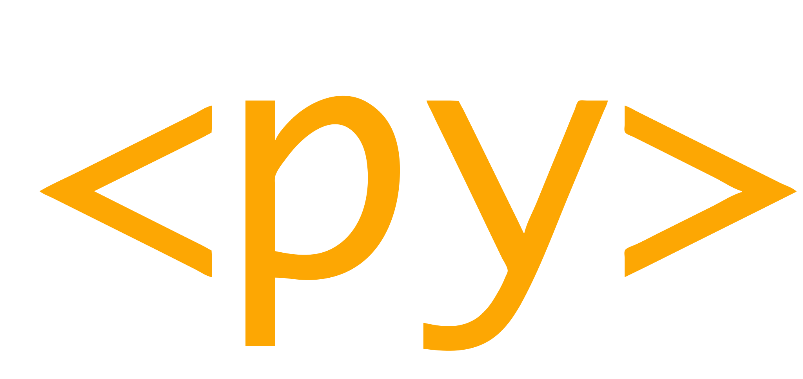
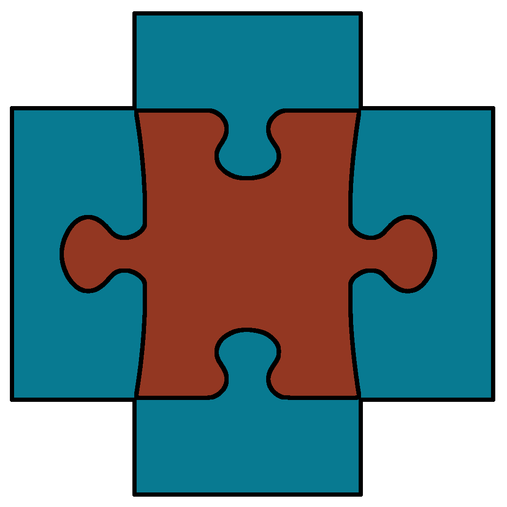

Practical PyScript
Nicholas H.Tollervey
ntoll@ntoll.org / ntollervey@anaconda.com
ntoll.org/presentations
Introductions
...and you?
- Who are you? 🫵
- What brings you to PyCon? 🐍
- Tell us a fun fact about yourself... 🥸
Today's Agenda:
4 sections:
- PyScript Core Concepts and Tools 🐍⚙️
- In depth exploration & pointers 🔬👉
- Playtime / hacking / breaking things 🧪💻
- Show & tell / washup 👀💬
Outcome: you've had fun collaborating (or not) to create, deploy and demo a PyScript app. 🎉🚀
ASK QUESTIONS! 🤔🤗
Don't ask to ask, just ask!
("I don't know, but let's find out!", is a good answer)
Section #1
PyScript Core Concepts and Tools 🐍⚙️
Aim: a grounding in core concepts, terms and technology.
What is PyScript?
You tell me... 😉
PyScript is an open source platform for Python in the browser, and sponsored by Anaconda .
If Python and the web had a baby, it'd be PyScript.
Python is currently the world's most popular programming language.
The web is the planet's most ubiquitous computing platform (and based on open code and standards).
<HTML/> CSS{} javascript;
How..? 🤔
How..? 🤔🤔
How..? 🤔🤔🤔
The (simple) story of a PyScript app:
- The browser sends an HTTP request for your app's web page and the server responds HTML.
- The HTML contains references to at least two
fundamental assets expressed as URLs:
- PyScript itself.
- Your Python code.
- The browser runs PyScript and your code in the sandbox that is your browser's tab.
- Thanks to PyScript, your code can do anything a browser can do (rather a lot).
Key info #1
Getting PyScript into the browser.
<html>
<head>
<title>My PyScript App</title>
<!-- PyScript CSS -->
<link
rel="stylesheet"
href="https://pyscript.net/releases/2025.3.1/core.css">
<!-- This script tag bootstraps PyScript -->
<script
type="module"
src="https://pyscript.net/releases/2025.3.1/core.js">
</script>
</head>
</html>
Key info #2
Get your code running in PyScript.
<html>
<head>...</head>
<body>
<script type="py" src="./main.py"></script>
</body>
</html>
 Pyodide (CPython):
Pyodide (CPython):
<html>
<head>...</head>
<body>
<script type="py" src="./main.py"></script>
</body>
</html>
MicroPython:
<html>
<head>...</head>
<body>
<script type="mpy" src="./main.py"></script>
</body>
</html>
In "main.py":
print("Hello, world!")
<html>
<head>...</head>
<body>
<script type="py" src="./main.py" terminal></script>
</body>
</html>
Revise "main.py":
name = input("What is your name? ")
print(f"Hello, {name}")
<html>
<head>...</head>
<body>
<script type="py" src="./main.py" terminal worker></script>
</body>
</html>
A quick aside...
Anaconda provide PyScript.com as a free service for creating, curating and hosting your PyScript applications.
Key info #3
Workers are like subprocesses inside your web page.
Key info #4
The browser is asynchronous.
Python is (usually) synchronous.
Workers allow us to resolve this because they can block (synchronously).
Brain rest...
🤯🧠🥱⁉️🤗
Section #2
In depth exploration & pointers 🔬👉
Aim: Steps to autonomy ~ what's possible, where to find things, and getting help.
Ultimately, you need just two things:
The Documentation
The Community
PyScript's Environment
(Use the "config" attribute to point to the URL for either a TOML or JSON file.)
<script type="py" src="./main.py" config="./conf.toml"></script>
<script type="py" src="./main.py" config="./conf.json"></script>
TOML
packages = ["arrr"]JSON
{
"packages": ["arrr"]
}In Python
from arrr import translate
print(translate("Hello, world!"))Map from source URL to filesystem destination.
[files]
"https://example.com/data.csv" = "./data.csv"
"./code.py" = "./subdir/code.py"{
"files": {
"https://example.com/data.csv": "./data.csv",
"./code.py": "./subdir/code.py"
}
}Archives (.zip, .tgz, .whl) are automatically uncompressed if the target is a "folder/*":
[files]
"./my_data.tgz" = "./data/*"A DSL to help. Placeholders defined between {}
{
"files": {
"{DOMAIN}": "https://my-server.com",
"{PATH}": "a/path",
"{VERSION}": "1.2.3",
"{FROM}": "{DOMAIN}/{PATH}/{VERSION}",
"{TO}": "./my_module",
"{FROM}/__init__.py": "{TO}/__init__.py",
"{FROM}/foo.py": "{TO}/foo.py",
"{FROM}/bar.py": "{TO}/bar.py",
"{FROM}/baz.py": "{TO}/baz.py",
}
}In your configuration:
[js_modules.main]
"https://cdn.jsdelivr.net/npm/leaflet@1.9.4/dist/leaflet-src.esm.js" = "leaflet"
"https://cdn.jsdelivr.net/npm/leaflet@1.9.4/dist/leaflet.css" = "leaflet" # CSS
In your Python code:
from pyscript.js_modules import leaflet as L
map = L.map("map")
# etc....Remember Python doesn't have a new keyword, so:
# Call the new() method instead
x = AJSClass.new()Other environmental configurations:
- The interpreter to use.
- Third party plugins.
- Flags for experimental features/compatibility.
- Custom arbitrary configuration values.
See the docs for more specific information.
How..? 🤔🤔🤔
Key info #5
There is a foreign function interface (FFI) to broker between Python's world and the browser's world.
This is one of those subtle moving parts.
Key info #6
The browser has a root object called globalThis.
It is off the object that ALL browser capabilities hang.
import js
# the js object is a proxy in Python for globalThis
js.alert("Hello, world!")This is why we have the pyscript namespace.
Our promise...
Highlights include:
pyscript.fetchandpyscript.WebSocketpyscript.webfor interacting with the DOM.- The
@pyscript.whendecorator for handling events. - The universal
pyscript.documentandpyscript.windowobjects. - Emit media via the
pyscript.displayfunction. - Lots of other good stuff.
See the docs for more details.
Important aside 😱
CORS is the cause of so much network related pain.
Check your server's headers.
It's as much fun as root canal work with an inexperienced dentist. 😬🛠️🦷💥
Python expressed in many ways...
A built-in Python editor (a la Notebooks)
The PyScript Donkey 🐴
Ready when you are!
import { donkey } from '@pyscript/core/dist/core.js';
const eeyore = await donkey({
type: 'py' || 'mpy', // Python interpreter to run
persistent: false, // `true` tracks globals and locals
terminal: '', // target terminal container
config: {}, // worker config
});
result = await eeyore.evaluate(`"Hello"`) // Python code.
/* Also available: process (in the terminal), execute, clear,
reset and kill. */
<script type="py-game" config="./pyscript.toml"
src="./main.py"></script>
<canvas id="canvas"></canvas>
3 Frameworks
An Invent application is made of this:
- Pages contain components used in the app 📱🎚️ ▶️
- Media are assets used by the app. 🖼️🎶🎥
- Functions define custom behaviour. ⚙️💪
- Channels carry messages to coordinate behaviour. 💬📡
- Datastore keeps state, stores key/value data. ✍️ 📖
- Tools do background stuff then store results in datastore. 🚚📦
PuePy is inspired by Vue.js, but is built entirely from scratch in Python. Here's "Hello, World!":
from puepy import Application, Page, t
app = Application()
@app.page()
class HelloWorldPage(Page):
def populate(self):
t.h1("Hello, World!")
app.mount("#app")
Chris explains best:
TESTING
uPyTest
import upytest
def test_raises_exception():
with upytest.raises(ValueError, KeyError):
raise ValueError("BOOM!")
@skip(
"Skip this if using MicroPython",
skip_when=upytest.is_micropython
)
def test_something():
assert 1 == 1 # Only asserted if using Pyodide.
uMock - for controlling test context
Mocks in blue
Component under test in red
from umock import AsyncMock
m = AsyncMock(return_value=42)
meaning_of_life = await m()
assert meaning_of_life == 42, "Meaning of life not as H2G2."
m.assert_awaited_once()
Brain rest...
🤯🧠🥱⁉️🤗
Section #3
Playtime / hacking / breaking things 🧪💻
Aim: practical autonomy ~ explore, experiment, have fun, and be creative with PyScript.
Section #4
Show & tell / washup 👀💬
Aim: roundup, reflect, ask questions and share your insights (your voice matters).
PyScript@PyCon2025
- Web Assembly Summit (tomorrow, 9am room 402)
- Łukasz Langa's tutorial: Discover 3D graphics with WebGL and PyScript (tomorrow, 9am room 320)
- Nicholas and Paul Everitt: Let's PyScript: Flask frontends in Python!(FlaskCon on Friday at 4:30pm room 317)
- Łukasz Langa's talk: Looking At Audio (Saturday, 1:30pm Ballroom A)
- Anaconda Booth in exhibitors' hall (all conference)
- Sprinting on Monday